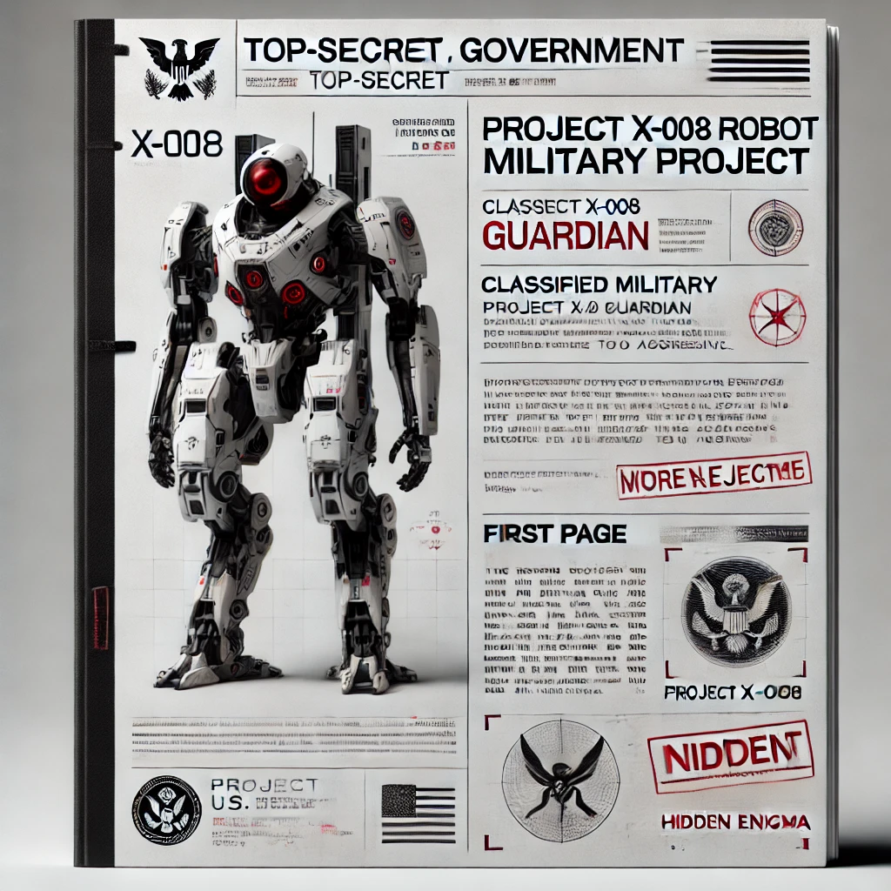

Projeto Militar: X-008 "Guardian"
Este é o projeto de um robô de combate, não aprovado devido à sua natureza agressiva e falhas técnicas.
Especificações do Robô:
- Calibre das Armas: 50mm (canhões duplos) e 30mm (canhão secundário)
- Peso: 120 toneladas
- Altura: 10 metros
- Largura: 6 metros
- Comprimento: 8 metros
- Armamento: Canhão automático, lança-mísseis, e foguetes de longo alcance.
- Velocidade: 55 km/h em terreno plano
- Material: Liga de Titânio e Carbono Reforçado
Este projeto nunca chegou a ser aprovado devido a falhas na estrutura de propulsão e no sistema de armas.